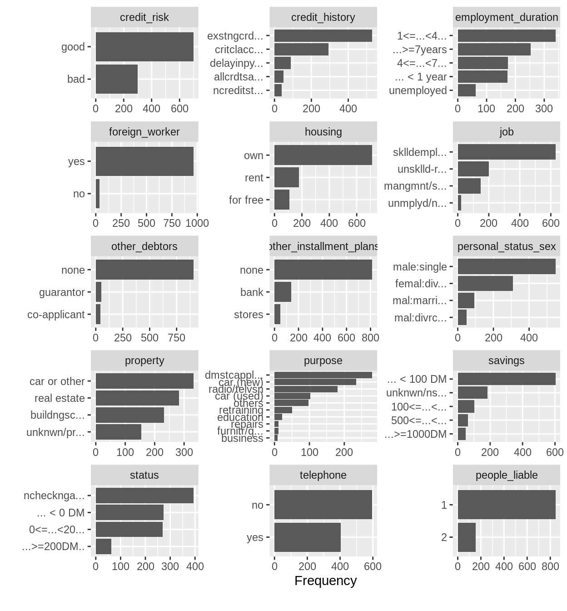
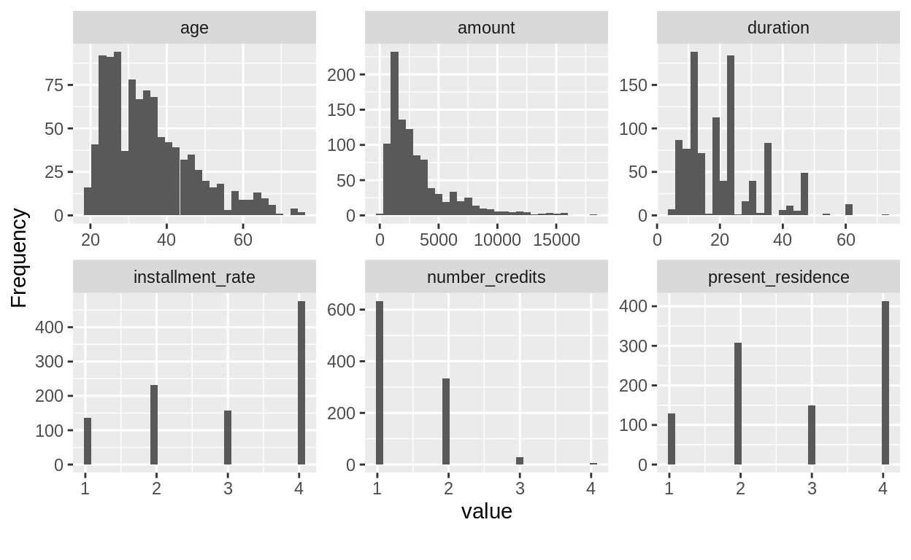
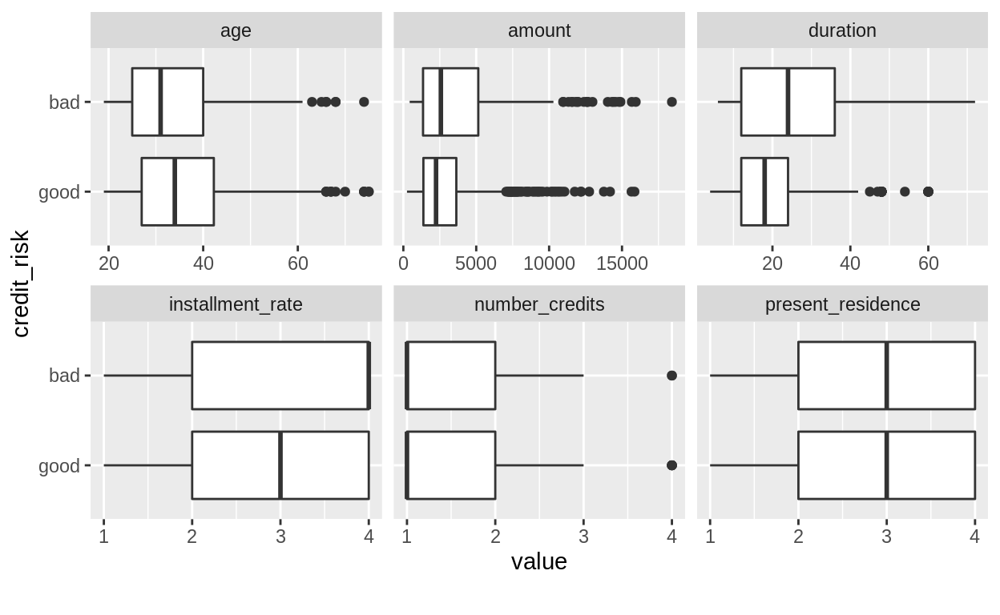
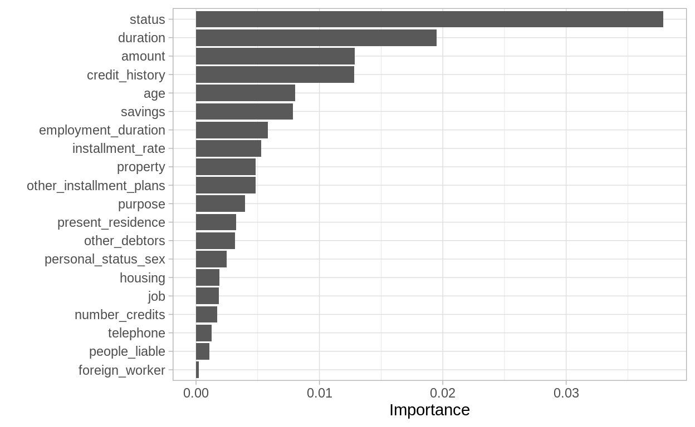

mlr3 is a machine learning framework for R. Together with other packages from the same developers, mostly following the naming scheme "mlr3___", it offers functionality around developing, tuning, and evaluating machine learning workflows.
This is the first part in a serial of tutorials. The other parts of this series can be found here:
We will walk through this tutorial interactively. The text is kept short to be followed in real time.
Ensure all packages used in this tutorial are installed. This includes packages from the mlr3 family, as well as other tools for data handling, cleaning and visualisation which we are going to use. Appendix for more info about packages
Load the packages we are going to use:
library("data.table")
library("mlr3")
library("mlr3learners")
library("ggplot2")In our tutorials we use the german_credit dataset for our next example. The German credit data is a research data set of the University of Hamburg from 1994 donated by Prof. Hans Hoffman. The data features personal, demographic and financial data on individuals. Furthermore, it contains an assessment on the individual’s creditworthniness. A detailed description (and manual download) can be found at the UCI repository.
As the "GermanCredit" data set is frequently used within mlr3, there is a task already existing just for this purpose.
Our goal is to classify people by their credit risk (good or bad) using 20 features:
| Feature Name | Description |
|---|---|
checking_status |
status/balance of checking account at this bank |
duration |
duration of the credit in months |
credit_history |
past credit history of applicant at this bank |
purpose |
reason customer is applying for a loan |
credit_amount |
amount asked by applicant |
savings_status |
savings accounts/bonds at this bank |
employment |
present employment since |
installment_commitment |
installment rate in percentage of disposable income |
personal_status |
combination of sex and personal status of applicant |
other_parties |
other debtors/guarantors present? |
residence_since |
present residence since |
property_magnitude |
properties that applicant has |
age |
age in years |
other_payment_plans |
other installment plans the applicant is paying |
housing |
type of apartment rented, owned, for free / no payment |
existing_credits |
number of existing credits at this bank |
job |
current job information |
num_dependents |
number of people being liable to provide maintenance |
own_telephone |
is there any telephone registered for this customer? |
foreign_worker |
is applicant foreign worker? |
The dataset we are going to look at is the german credit dataset. It comes with the mlr3 package. We can load it using the tsk() function.
task = tsk("german_credit")Before we use the data, we’ll do a thorough investigation of the dataset.
credit = task$data()We can get a quick overview on our data set using R’s summary function:
german_credit = task$data()
summary(german_credit)
credit_risk age amount
good:700 Min. :19.00 Min. : 250
bad :300 1st Qu.:27.00 1st Qu.: 1366
Median :33.00 Median : 2320
Mean :35.55 Mean : 3271
3rd Qu.:42.00 3rd Qu.: 3972
Max. :75.00 Max. :18424
credit_history duration
no credits taken/all credits paid back duly: 40 Min. : 4.0
all credits at this bank paid back duly : 49 1st Qu.:12.0
existing credits paid back duly till now :530 Median :18.0
delay in paying off in the past : 88 Mean :20.9
critical account/other credits existing :293 3rd Qu.:24.0
Max. :72.0
employment_duration foreign_worker housing installment_rate
unemployed : 62 yes:963 rent :179 Min. :1.000
... < 1 year :172 no : 37 own :713 1st Qu.:2.000
1 <= ... < 4 years:339 for free:108 Median :3.000
4 <= ... < 7 years:174 Mean :2.973
... >= 7 years :253 3rd Qu.:4.000
Max. :4.000
job
unemployed/unskilled - non-resident : 22
unskilled - resident :200
skilled employee/official :630
management/self-employed/highly qualified employee/officer:148
number_credits other_debtors other_installment_plans people_liable
Min. :1.000 none :907 bank :139 Min. :1.000
1st Qu.:1.000 co-applicant: 41 stores: 47 1st Qu.:1.000
Median :1.000 guarantor : 52 none :814 Median :1.000
Mean :1.407 Mean :1.155
3rd Qu.:2.000 3rd Qu.:1.000
Max. :4.000 Max. :2.000
personal_status_sex present_residence
male : divorced/separated : 50 Min. :1.000
female : divorced/separated/married:310 1st Qu.:2.000
male : single :548 Median :3.000
male : married/widowed : 92 Mean :2.845
female : single : 0 3rd Qu.:4.000
Max. :4.000
property
real estate :282
building society savings agreement/life insurance:232
car or other :332
unknown/no property :154
purpose savings
domestic appliances:280 ... < 100 DM :603
car (new) :234 100 <= ... < 500 DM :103
radio/television :181 500 <= ... < 1000 DM : 63
car (used) :103 ... >= 1000 DM : 48
others : 97 unknown/no savings account:183
retraining : 50
(Other) : 55
status telephone
... < 0 DM :274 no :596
0 <= ... < 200 DM :269 yes:404
... >= 200 DM / salary for at least 1 year: 63
no checking account :394
dim(german_credit)
[1] 1000 21Our dataset has 1000 observations and 21 columns. The variable we want to predict is credit_risk (either good or bad). That means we aim to classify people by their credit risk (good or bad).
We recommend the skimr (skimr::skim) and DataExplorer (DataExplorer::plot_bar, DataExplorer::plot_histogram, DataExplorer::plot_boxplot) packages as they create very well readable and understandable overviews.
skimr::skim(credit)| Name | credit |
| Number of rows | 1000 |
| Number of columns | 21 |
| _______________________ | |
| Column type frequency: | |
| factor | 14 |
| numeric | 7 |
| ________________________ | |
| Group variables | None |
Variable type: factor
| skim_variable | n_missing | complete_rate | ordered | n_unique | top_counts |
|---|---|---|---|---|---|
| credit_risk | 0 | 1 | FALSE | 2 | goo: 700, bad: 300 |
| credit_history | 0 | 1 | FALSE | 5 | exi: 530, cri: 293, del: 88, all: 49 |
| employment_duration | 0 | 1 | TRUE | 5 | 1 <: 339, …: 253, 4 <: 174, …: 172 |
| foreign_worker | 0 | 1 | FALSE | 2 | yes: 963, no: 37 |
| housing | 0 | 1 | FALSE | 3 | own: 713, ren: 179, for: 108 |
| job | 0 | 1 | FALSE | 4 | ski: 630, uns: 200, man: 148, une: 22 |
| other_debtors | 0 | 1 | FALSE | 3 | non: 907, gua: 52, co-: 41 |
| other_installment_plans | 0 | 1 | FALSE | 3 | non: 814, ban: 139, sto: 47 |
| personal_status_sex | 0 | 1 | FALSE | 4 | mal: 548, fem: 310, mal: 92, mal: 50 |
| property | 0 | 1 | FALSE | 4 | car: 332, rea: 282, bui: 232, unk: 154 |
| purpose | 0 | 1 | FALSE | 10 | dom: 280, car: 234, rad: 181, car: 103 |
| savings | 0 | 1 | FALSE | 5 | …: 603, unk: 183, 100: 103, 500: 63 |
| status | 0 | 1 | FALSE | 4 | no : 394, …: 274, 0 <: 269, …: 63 |
| telephone | 0 | 1 | FALSE | 2 | no: 596, yes: 404 |
Variable type: numeric
| skim_variable | n_missing | complete_rate | mean | sd | p0 | p25 | p50 | p75 | p100 | hist |
|---|---|---|---|---|---|---|---|---|---|---|
| age | 0 | 1 | 35.55 | 11.38 | 19 | 27.0 | 33.0 | 42.00 | 75 | ▇▆▃▁▁ |
| amount | 0 | 1 | 3271.26 | 2822.74 | 250 | 1365.5 | 2319.5 | 3972.25 | 18424 | ▇▂▁▁▁ |
| duration | 0 | 1 | 20.90 | 12.06 | 4 | 12.0 | 18.0 | 24.00 | 72 | ▇▇▂▁▁ |
| installment_rate | 0 | 1 | 2.97 | 1.12 | 1 | 2.0 | 3.0 | 4.00 | 4 | ▂▃▁▂▇ |
| number_credits | 0 | 1 | 1.41 | 0.58 | 1 | 1.0 | 1.0 | 2.00 | 4 | ▇▅▁▁▁ |
| people_liable | 0 | 1 | 1.16 | 0.36 | 1 | 1.0 | 1.0 | 1.00 | 2 | ▇▁▁▁▂ |
| present_residence | 0 | 1 | 2.85 | 1.10 | 1 | 2.0 | 3.0 | 4.00 | 4 | ▂▆▁▃▇ |
p = DataExplorer::plot_bar(credit_short, nrow = 5, ncol = 3)
DataExplorer::plot_histogram(credit, nrow = 2, ncol = 3)
DataExplorer::plot_boxplot(credit, by = "credit_risk", nrow = 2, ncol = 3)
During this exploratory analysis meaningful analysis aspects could be:
An explanatory analysis is crucial to get a feeling for your data. On the other hand the data can be validated this way. Non plausible data can be investigated or outliers can be removed.
However, in this use case we do not focus on the exploratory analysis.
We want to do modeling now!
Considering how we are going to tackle the problem relates closely to what mlr3 entities we will use.
The typical questions that arise when building an ML workflow are:
What is the problem we are trying to solve? What are appropriate learning algorithms? How do we evaluate “good” performance?
More systematically in mlr3 they can be expressed via five components:
The task defintion
The learner definition
The training
The prediction
The evaluation via measures
First of all, we are interested in the target which we want to model. Most supervised machine learning problems are regression or classification problems. However, note that other problems include unsupervised learning or time-to-event data (covered in mlr3survival). In the mlr3 context to distinguish between these problems, we define tasks. If we want to solve a classification problem, we define a classifaction task – TaskClassif. For a regression problem, we establish a regression task – TaskRegr. Tasks are not only a different word for problems. They also reflect some technical properties with respect to mlr3.
In our case it is clearly our objective to model or predict the binary factor variable credit_risk. Thus, we use TaskClassif.
With TaskClassif$new() we can initialize a classification task. We need to specify a name for the task (we choose "GermanCredit"), the data we want to use (credit) and name of the target ("credit_risk"):
task = TaskClassif$new("GermanCredit", credit, "credit_risk")After having decided what should be modeled, we need to decide on how. This means we need to decide which learning algrorithms, or Learners are appropriate. Using prior knowledge (e.g. knowing that it is a classification task or assuming that the classes are linearly separable) one ends up with one or some suitable Learners. Many learners can be obtained via the mlr3learners package (CRAN). Additionally, many learners are provided on the mlr3learners organsisation github page. These two ressources combined account for a large fraction of standard learning algorithms. As mlr3 usually only wraps learners from packages, it is easy to create a formal Learner by yourself using our template (). You may find the section ‘Extending mlr3’ in this book also very helpful. If you happen to write your own Learner in mlr3, we would be happy if you share it with the mlr3 community.
All available Learners (i.e. all which you have installed from mlr3, mlr3learners, the mlr3learners github page or self-written ones) can be obtained by:
mlr_learners
<DictionaryLearner> with 24 stored values
Keys: classif.cv_glmnet, classif.debug, classif.featureless,
classif.glmnet, classif.kknn, classif.lda, classif.log_reg,
classif.multinom, classif.naive_bayes, classif.qda, classif.ranger,
classif.rpart, classif.svm, classif.xgboost, regr.cv_glmnet,
regr.featureless, regr.glmnet, regr.kknn, regr.km, regr.lm,
regr.ranger, regr.rpart, regr.svm, regr.xgboostFor our problem, a suitable learner could be one of the following: Logistic regression, CART, Random Forest (or many more).
A learner can be initialized with the lrn function and the name of the learner (e.g., lrn("classif.xxx")). Use ?mlr_learners_xxx to open the help page of a learner named xxx, or use the internet.
For example a logistic regression can be initialised in the following manner (logistic regression using R’s glm() function and is provided by the mlr3learners package).
learner_logreg = lrn("classif.log_reg")Alternatively but equivalently, one could use:
learner_logreg = LearnerClassifLogReg$new()Training is the procedure, where a model is fitted on data. The selected model is trained so that is reflects the data situation in the best possible manner.
We start with the example of the logistic regression. However, you will immediately see that the procedure generalises to any learner very easily.
An initialised learner can be trained on data using the R6 method train.
learner_logreg$train(task)Typically, in machine learning, one does not use the full data which is available but a subset, the so-called training data.
To efficiently perform a spilt of the data one could do the following:
train_set = sample(task$nrow, 0.8 * task$nrow)
test_set = setdiff(seq_len(task$nrow), train_set)80 percent of the data is used for training. The remaining 20 percent are used for evaluation at a subsequent later point in time. train_set is an integer vector displaying the selected rows of the original data set.
head(train_set)
[1] 192 887 86 784 801 673In mlr3 the training with a subset of the data is declared by the additional argument row_ids = train_set.
learner_logreg$train(task, row_ids = train_set)We used logistic regression from the stats package. To be precise stats::glm with the family argument set to family = binomial(). All other arguments are set to the default of the stats::glm function. mlr3 only works as a wrapper. The original model can be accessed via:
learner_logreg$model
Call: stats::glm(formula = task$formula(), family = "binomial", data = task$data(),
model = FALSE)
Coefficients:
(Intercept)
-0.169000
age
-0.017889
amount
0.000109
credit_historyall credits at this bank paid back duly
0.049299
credit_historyexisting credits paid back duly till now
-0.676346
credit_historydelay in paying off in the past
-0.736089
credit_historycritical account/other credits existing
-1.417535
duration
0.036276
employment_duration.L
-0.517899
employment_duration.Q
0.271832
employment_duration.C
0.382256
employment_duration^4
0.190810
foreign_workerno
-1.177852
housingown
-0.396100
housingfor free
-0.902827
installment_rate
0.319671
jobunskilled - resident
0.930743
jobskilled employee/official
0.842496
jobmanagement/self-employed/highly qualified employee/officer
0.974121
number_credits
0.113429
other_debtorsco-applicant
0.397091
other_debtorsguarantor
-0.995089
other_installment_plansstores
-0.221707
other_installment_plansnone
-0.577106
people_liable
0.373773
personal_status_sexfemale : divorced/separated/married
-0.190423
personal_status_sexmale : single
-0.801198
personal_status_sexmale : married/widowed
-0.550974
present_residence
-0.015591
propertybuilding society savings agreement/life insurance
0.214606
propertycar or other
0.108431
propertyunknown/no property
1.101243
purposecar (used)
-1.612521
purposefurniture/equipment
-1.246110
purposeradio/television
-0.491197
purposedomestic appliances
-0.623486
purposerepairs
0.698793
purposeeducation
-0.544868
purposeretraining
-0.093641
purposebusiness
-1.514206
purposeothers
-0.619338
savings100 <= ... < 500 DM
-0.260712
savings500 <= ... < 1000 DM
-0.593219
savings... >= 1000 DM
-1.577837
savingsunknown/no savings account
-0.923413
status0 <= ... < 200 DM
-0.305674
status... >= 200 DM / salary for at least 1 year
-1.164042
statusno checking account
-1.654290
telephoneyes
-0.364520
Degrees of Freedom: 799 Total (i.e. Null); 751 Residual
Null Deviance: 993.7
Residual Deviance: 713.9 AIC: 811.9The stored object is a normal glm object and works with its S3 methods.
class(learner_logreg$model)
summary(learner_logreg$model)summary returns the result of glm() and can be inspected as such. (The output is too much to show it in the post - but you should definitely do it!)
Just like the logistic regression, we could train a random forest instead. We use the fast implementation from the ranger package. To do so we first need to define the learner and then actually train it. Before we just used the default logistic regression learner.
We now additionally supply the importance argument (importance = "permutation"). Doing so, we override the default and let the learner do feature importance determination based on permutation feature importance.
learner_rf = lrn("classif.ranger", importance = "permutation")
learner_rf$train(task)We can access the importance values using $importance(). The R6 importance method plots the feature importance derived during training.
learner_rf$importance()
status duration amount
0.0378896914 0.0194936208 0.0128649871
credit_history age savings
0.0127976969 0.0080353106 0.0078620250
employment_duration installment_rate property
0.0058204571 0.0052860323 0.0048220951
other_installment_plans purpose present_residence
0.0048193882 0.0039523087 0.0032598609
other_debtors personal_status_sex housing
0.0031657482 0.0025006772 0.0018926451
job number_credits telephone
0.0018378665 0.0017186520 0.0012834666
people_liable foreign_worker
0.0010916984 0.0002252254 In order to obtain a better plot, we convert the importance into a data.table.
importance = as.data.table(learner_rf$importance(), keep.rownames = TRUE)
colnames(importance) = c("Feature", "Importance")
importance
Feature Importance
1: status 0.0378896914
2: duration 0.0194936208
3: amount 0.0128649871
4: credit_history 0.0127976969
5: age 0.0080353106
6: savings 0.0078620250
7: employment_duration 0.0058204571
8: installment_rate 0.0052860323
9: property 0.0048220951
10: other_installment_plans 0.0048193882
11: purpose 0.0039523087
12: present_residence 0.0032598609
13: other_debtors 0.0031657482
14: personal_status_sex 0.0025006772
15: housing 0.0018926451
16: job 0.0018378665
17: number_credits 0.0017186520
18: telephone 0.0012834666
19: people_liable 0.0010916984
20: foreign_worker 0.0002252254
ggplot(importance, aes(x = reorder(Feature, Importance), y = Importance)) +
geom_col() + coord_flip() + xlab("")
After training the machine learning model, the model can be used for prediction. Usually, prediction is the main purpose of machine learning models. In our case, the model can be used to classify new credit applicants w.r.t. their associated credit status (good vs. bad) on the basis of the features. Typically, machine learning models create numeric values. In the regression case this is very natural. For classification, most models create scores or probabilites. Based on these values, one can derive class predictions.
First, we directly predict classes. Here, we do something which is almost never a good idea in machine learning: Use the same data for prediction as for training. However, for the purpose of demonstration we can negelct this.
pred_logreg = learner_logreg$predict_newdata(german_credit)
pred_rf = learner_rf$predict_newdata(german_credit)
pred_logreg
<PredictionClassif> for 1000 observations:
row_id truth response
1 good good
2 bad bad
3 good good
---
998 good good
999 bad bad
1000 good good
pred_rf
<PredictionClassif> for 1000 observations:
row_id truth response
1 good good
2 bad bad
3 good good
---
998 good good
999 bad bad
1000 good goodThe predict() function gives a Prediction object. It can be converted to a data.table if one wants to use it downstream.
We display the prediction results aggregated in a confusion matrix.
pred_logreg$confusion
truth
response good bad
good 621 134
bad 79 166
pred_rf$confusion
truth
response good bad
good 700 0
bad 0 300The random forest seems to perform much better than the logistic regression. Based on this output, we would always want the random forest to do our credit worthiness classification. However, as outlined, we evalaute on the training data. It is possible that the results are steered by overfitting. Additionally, we use the default options of the packages which seems ‘unfair’. It could be that the default options of the random forest are much better suited to the data situation than the logistic regression. We should do performance evaluation, tuning and benchmarks
Most learners may not only predict a class variable (“response”), but also their degree of “belief” / uncertainty in a given response. Typically, we achieve this by setting the $predict_type slot to "prob". Sometimes this needs to be done before the learner is trained. This is necessary because the wrapped package requires this. Alternatively, we can directly create the learner with this option: lrn("classif.log_reg", predict_type = "prob").
learner_logreg$predict_type = "prob"
learner_logreg$predict_newdata(german_credit)
<PredictionClassif> for 1000 observations:
row_id truth response prob.good prob.bad
1 good good 0.9708296 0.02917040
2 bad bad 0.2714424 0.72855763
3 good good 0.9708825 0.02911749
---
998 good good 0.9197164 0.08028359
999 bad bad 0.2796281 0.72037186
1000 good good 0.7653637 0.23463628Note that sometimes one needs to be cautious when dealing with the probability interpretation of the predictions.
To measure the performance of a learner on new unseen data, we usually mimic the scenario of unseen data by splitting up the data into training and test set. The training set is used for training the learner, and the test set is only used for predicting and evaluating the performance of the trained learner. Numerous resampling methods (cross-validation, bootstrap) repeat the splitting process in different ways.
We need to specify the resampling strategy using the rsmp() function:
resampling = rsmp("holdout", ratio = 2 / 3)
print(resampling)
<ResamplingHoldout> with 1 iterations
* Instantiated: FALSE
* Parameters: ratio=0.6667Here, we use “holdout”, a simple train-test split (with just one interation). We use the resample() function to undertake the resampling calculation:
res = resample(task, learner_logreg, resampling)
res
<ResampleResult> of 1 iterations
* Task: GermanCredit
* Learner: classif.log_reg
* Warnings: 0 in 0 iterations
* Errors: 0 in 0 iterationsThe default score of the measure is included in the $aggregate() slot:
res$aggregate()
classif.ce
0.2732733 The default in this scenario is classif.ce. This refers to the classification error. A low value close to one is desired.
We can easily run differend resampling strategies, e.g. repeated holdout ("subsampling"), or cross validation. Most methods perform repeated train/predict cycles on different data subsets and aggregate the result (usually as the mean()). Doing this manually would require us to write loops. mlr3 does the job for us.
res_sub = resample(task, learner_logreg, rsmp("subsampling", repeats = 10))
res_sub$aggregate()
classif.ce
0.2441441 Instead, we could also apply cross-validation.
res_cv = resample(task, learner_logreg, rsmp("cv", folds = 10))
res_cv$aggregate()
classif.ce
0.244 mlr3 features scores for many more measures. Here we apply msr("classif.fpr") for the false positive rate, or msr("classif.fnr") for the false negative rate. Multiple measures are entered via a list.
# false positive rate
res_cv$aggregate(msr("classif.fpr"))
classif.fpr
0.5058373
# false positive rate and false negative
msr_list = list(
msr("classif.fpr"),
msr("classif.fnr")
)
res_cv$aggregate(msr_list)
classif.fpr classif.fnr
0.5058373 0.1319278 There are a few more resampling methods, and quite a few more measures. We list them in
mlr_resamplings
<DictionaryResampling> with 7 stored values
Keys: bootstrap, custom, cv, holdout, insample, repeated_cv,
subsamplingand
mlr_measures
<DictionaryMeasure> with 53 stored values
Keys: classif.acc, classif.auc, classif.bacc, classif.bbrier,
classif.ce, classif.costs, classif.dor, classif.fbeta, classif.fdr,
classif.fn, classif.fnr, classif.fomr, classif.fp, classif.fpr,
classif.logloss, classif.mbrier, classif.mcc, classif.npv,
classif.ppv, classif.precision, classif.recall, classif.sensitivity,
classif.specificity, classif.tn, classif.tnr, classif.tp,
classif.tpr, debug, oob_error, regr.bias, regr.ktau, regr.mae,
regr.mape, regr.maxae, regr.medae, regr.medse, regr.mse, regr.msle,
regr.pbias, regr.rae, regr.rmse, regr.rmsle, regr.rrse, regr.rse,
regr.rsq, regr.sae, regr.smape, regr.srho, regr.sse,
selected_features, time_both, time_predict, time_trainTo get help on a resampling method, use ?mlr_resamplings_xxx, for a measure do ?mlr_measures_xxx. You can also use the mlr3 reference online.
Some measure, for example "auc", require a “probability” prediction, instead of a response prediction.
Learners by evaluating resample() for each of them manually. However, benchmark() automatically performs resampling evaluations for multiple learners and tasks. benchmark_grid() creates fully crossed designs: Multiple Learners for multiple Tasks are compared w.r.t. multiple Resamplings.
lrn_list = list(
lrn("classif.log_reg", predict_type = "prob"),
lrn("classif.ranger", predict_type = "prob")
)
bm_design = benchmark_grid(task = task, resamplings = rsmp("cv", folds = 10), learners = lrn_list)At this point, we want to mention that large benchmarks will (naturally) be very time-consuming and computionally expensvie. Our use case is very simple, so expect it to take about one minute. In general, we want use parallelization to speed things up on multicore machines. A benchmark is an ‘embarassingly parallel’ task, so in this case it would be very easy. This does not work on rstudio cloud, though. So only uncomment it locally!
# future::plan("multiprocess")
bmr = benchmark(bm_design)In the benchmark we can compare different measures. We compare misclassification rate and AUC.
msr_list = list(msr("classif.ce"), msr("classif.auc"))
performances = bmr$aggregate(msr_list)
performances[, c("learner_id", "classif.ce", "classif.auc")]
learner_id classif.ce classif.auc
1: classif.log_reg 0.252 0.7884098
2: classif.ranger 0.231 0.8008735In contrast to before, we see that the two models perform very similarly. The perfect class assignment from before was obviously a very optimistic evalution.
The previously shown techniques build the backbone of an mlr3-featured machine learning work bench. However, in most cases one would never proceed in the way we did. While many R packages have carefully selected default settings, they will not perform optimally in any scenario. Typically, we can select the values of hyperparameters. These (hyper)parameters can be accessed via
learner_logreg$param_set$get_values()
named list()or
learner_logreg$param_set
ParamSet:
id class lower upper levels default value
1: singular.ok ParamLgl NA NA TRUE,FALSE TRUE
2: x ParamLgl NA NA TRUE,FALSE FALSE
3: y ParamLgl NA NA TRUE,FALSE TRUE
4: model ParamLgl NA NA TRUE,FALSE TRUE
5: etastart ParamUty NA NA <NoDefault>
6: mustart ParamUty NA NA <NoDefault>
7: start ParamUty NA NA
8: offset ParamUty NA NA <NoDefault>
9: epsilon ParamDbl -Inf Inf 1e-08
10: maxit ParamDbl -Inf Inf 25
11: trace ParamLgl NA NA TRUE,FALSE FALSE
12: se.fit ParamLgl NA NA TRUE,FALSE FALSE
13: dispersion ParamUty NA NA As of now, the parameter set is empty.
We can parametrise our learners in two distinct manners. If we have prior knowledge on how the learner should be (hyper-)parametrised, the way to go would be manually entering the parameters in the parameter set. In most cases, however, we would want to tune the model so that it can search good model configurations itself. For now however we only want to compare a small number of models.
To get an idea on which parameters can be manipulated, we can investigate the parameters of the original package version.
?ranger::ranger
expression1 = floor(sqrt(ncol(german_credit) - 1))For the random forest two meaninful parameters which steer model complexity are: num.trees and mtry
num.trees defaults to 500 and mtry to floor(sqrt(ncol(data) - 1)), in our case 4.
In the following we aim to train three different learners:
The default random forest.
A random forest with low num.trees and low mtry.
A random forest with high num.trees and high mtry.
We will benchmark their performance on the German credit data set.
We construct the three learners and set the parameters with a named list.
learner_rf_medium = lrn("classif.ranger", predict_type = "prob")
learner_rf_low = lrn("classif.ranger", predict_type = "prob")
learner_rf_low$param_set$values <- list(num.trees = 5, mtry = 2)
learner_rf_high = lrn("classif.ranger", predict_type = "prob")
learner_rf_high$param_set$values <- list(num.trees = 1000, mtry = 11)Once the learners are defined, we can benchmark them.
lrn_list = list(
learner_rf_low = learner_rf_low,
learner_rf_medium = learner_rf_medium,
learner_rf_high = learner_rf_high
)
bm_design = benchmark_grid(task = task, resamplings = rsmp("cv", folds = 10), learners = lrn_list)
bmr = benchmark(bm_design)We compare misclassification rate and AUC again.
msr_list = list(msr("classif.ce"), msr("classif.auc"))
performances = bmr$aggregate(msr_list)
cbind(learner = names(lrn_list), performances[, c("classif.ce", "classif.auc")])
learner classif.ce classif.auc
1: learner_rf_low 0.274 0.7137971
2: learner_rf_medium 0.228 0.8027832
3: learner_rf_high 0.233 0.7984704All learners seem to have similar performance while the learner_rf_low seems to underfit a bit.
This tutorial was very detailed on the default workflow within mlr3. Having followed this tutorial you should be able to run your first models yourself. Next to that we spiked into performance evaluation and benchmarking. Furthermore, we showed how to customise learners.
The next parts of the tutorial will go more into depth into additional mlr3 topics.
Part II - Pipelines introduces you into the mlr3pipelines package. You will learn you to build complete machine learning workflows including, e.g. data preprocessing.
Part III - Tuning introduces you into the mlr3tuning package. You will learn how to find parametrisations of your model that perform better than others.
lrn(), tsk(), etc. again? -> Think about the corresponding dictionary.
mlr_learners
<DictionaryLearner> with 24 stored values
Keys: classif.cv_glmnet, classif.debug, classif.featureless,
classif.glmnet, classif.kknn, classif.lda, classif.log_reg,
classif.multinom, classif.naive_bayes, classif.qda, classif.ranger,
classif.rpart, classif.svm, classif.xgboost, regr.cv_glmnet,
regr.featureless, regr.glmnet, regr.kknn, regr.km, regr.lm,
regr.ranger, regr.rpart, regr.svm, regr.xgboost
mlr_tasks
<DictionaryTask> with 9 stored values
Keys: boston_housing, german_credit, iris, mtcars, pima, sonar, spam,
wine, zoo
mlr_measures
<DictionaryMeasure> with 53 stored values
Keys: classif.acc, classif.auc, classif.bacc, classif.bbrier,
classif.ce, classif.costs, classif.dor, classif.fbeta, classif.fdr,
classif.fn, classif.fnr, classif.fomr, classif.fp, classif.fpr,
classif.logloss, classif.mbrier, classif.mcc, classif.npv,
classif.ppv, classif.precision, classif.recall, classif.sensitivity,
classif.specificity, classif.tn, classif.tnr, classif.tp,
classif.tpr, debug, oob_error, regr.bias, regr.ktau, regr.mae,
regr.mape, regr.maxae, regr.medae, regr.medse, regr.mse, regr.msle,
regr.pbias, regr.rae, regr.rmse, regr.rmsle, regr.rrse, regr.rse,
regr.rsq, regr.sae, regr.smape, regr.srho, regr.sse,
selected_features, time_both, time_predict, time_train
mlr_resamplings
<DictionaryResampling> with 7 stored values
Keys: bootstrap, custom, cv, holdout, insample, repeated_cv,
subsampling$new() constructor?
formals(TaskClassif$public_methods$initialize)
$id
$backend
$target
$positive
NULL
# Writing `pred_rf$`, and pressing <TAB> should work.
# Otherwise:
names(pred_rf)
[1] ".__enclos_env__" "missing" "confusion" "prob"
[5] "response" "truth" "row_ids" "man"
[9] "predict_types" "task_properties" "task_type" "data"
[13] "set_threshold" "initialize" "clone" "score"
[17] "help" "print" "format"
# try names without `()` first
# and see if it is a function
# The documentation is organized by object classes
class(pred_rf)
[1] "PredictionClassif" "Prediction" "R6"
# use ?PredictionClassif, ?Prediction etc.
# Try all elements listed in the class| Package | Functionality |
|---|---|
mlr3 |
Framework for machine learning: Task, Learner, resample() and benchmark() |
mlr3learners |
Concrete Learners for many popular machine learning implementations |
mlr3pipelines |
Dataflow programming of machine learning workflows. |
mlr3tuning |
Hyperparameter tuning for machine learning algorithms. |
mlr3filter |
Feature filtering |
mlr3viz |
Visualisations and plots |
paradox |
Auxiliary package providing (hyper)parameter handling |
mlr3misc |
Auxiliary functions |
The non-mlr3 packages we use:
| Package | Reason |
|---|---|
remotes |
We use this only to be able to do remotes::install_github(). This enables us to install packages from GitHub that are not on CRAN yet. |
data.table |
This provides a more efficient and versatile replacement for the data.frame datatype built into R. Intro vignette |
ggplot2 |
A very powerful plotting tool. Overview with link to “cheat sheets” |
callr |
Encapsulating function calls in external R sessions. GitHub page |
future |
Parallelization to make use of multicore functionality. GitHub page |
skimr |
Plotting data summaries for exploratory data analysis. Vignette |
DataExplorer |
Plotting data for exploratory data analysis. Vignette |
rpart.plot |
Plotting CART trees. Website |
precrec |
Plotting AUC curves. Vignette |
glmnet |
Provides the "*.glmnet" Learners. Penalized regression is often surprisingly powerful, especially in high-dimensional settings. |
kknn |
Provides the "*.kknn" Learners. k-nearest neighbor classification / regression is a classical machine learning technique. |
MASS |
Provides the "*.lda" and "*.qda" Learners. |
ranger |
Provides the "*.ranger" Learners. This is an implementation of the powerful “Random Forest” algorithm, which often works very well, even without parameter tuning. |
xgboost |
Provides the "*.xgboost" Learners. Gradient boosting is often among the best performing machine learning methods, although it may require parameter tuning. |
e1071 |
Provides the "*.svm" and "classif.naive_bayes" Learners. SVMs (support vector machines) perform well, but are very dependent on correctly chosen kernel parameters. |
For attribution, please cite this work as
Binder & Pfisterer (2020, March 11). mlr3gallery: mlr3 basics - german credit. Retrieved from https://mlr3gallery.mlr-org.com/posts/2020-03-11-basics-german-credit/
BibTeX citation
@misc{binder2020mlr3,
author = {Binder, Martin and Pfisterer, Florian},
title = {mlr3gallery: mlr3 basics - german credit},
url = {https://mlr3gallery.mlr-org.com/posts/2020-03-11-basics-german-credit/},
year = {2020}
}